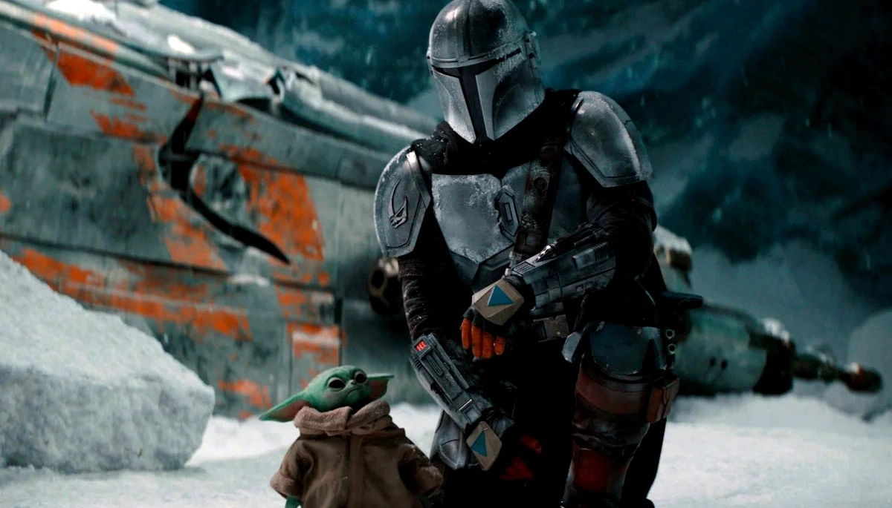

LOCACIÓN, TECNOLOGÍA Y PRODUCCIÓN
El estudio StageCraft se encuentra en California, Estados Unidos, y ocupa un espacio físico que ha transformado la producción de cine y televisión. Las paredes LED no solo proyectan paisajes, sino que también interactúan con los elementos físicos del set, como arena o rocas, para crear una coherencia de luz y reflejos imposible de lograr con pantallas verdes.
Aunque la serie se rueda en un estudio, los entornos digitales replican locaciones icónicas del universo Star Wars (como el desértico Tatooine y el gélido Maldo Kreis) y presentan nuevos mundos, todos diseñados para reflejar el tono western de la serie: sucio, arenoso y sin ley.
